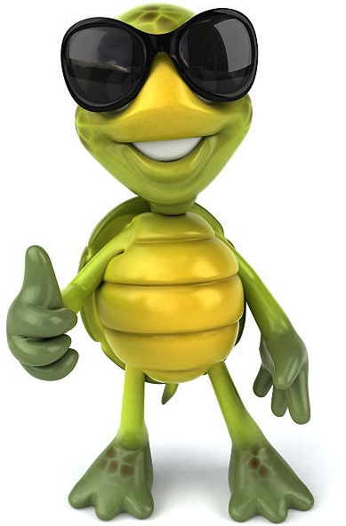
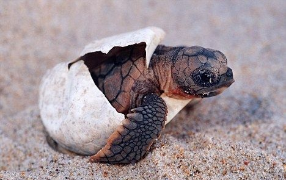

Welcome to TurtleTales!
Our Community
Whether you're a seasoned turtle keeper, a passionate conservationist, or simply captivated by these fascinating reptiles, TurtleTales is the perfect community for you. Dive into a world where members share their experiences, insights, and love for turtles of all species. From adorable hatchling stories to conservation efforts worldwide, TurtleTales is your go-to hub for everything turtle-related. Connect with fellow turtle aficionados, exchange tips on habitat setups, discuss the latest scientific discoveries, and join hands in our mission to promote turtle welfare and conservation. Join us in celebrating these majestic creatures and unravel the endless tales of the turtle kingdom at TurtleTales Community!

TurtleTales Information
Turtles are fascinating creatures known for their distinctive features and intriguing behaviors. These reptiles are equipped with a protective shell, which serves as their shield against predators and environmental hazards. Turtles have been roaming the Earth for millions of years, showcasing remarkable longevity and resilience. They inhabit various ecosystems, from tropical rainforests to icy polar regions, adapting to diverse environments with ease.One of the most captivating aspects of turtles is their nesting behavior. Female turtles return to the same beaches where they were born to lay their eggs, a remarkable journey guided by instinct and memory.

How do Turtles Hatch?
The hatching process of turtles is a crucial stage in their life cycle, following an incubation period that varies depending on factors such as species, temperature, and humidity. During this period, the embryo develops within the egg, receiving nutrients from the yolk sac. As the time for hatching approaches, the hatchling begins to break out of its eggshell using a specialized structure called an egg tooth, located on its beak. This process, known as pipping, can take hours or even days, during which the hatchling may pause to rest and gather strength. Once the hatchling emerges from the egg, it is typically covered in a sticky fluid from inside the egg. After a brief period of rest to dry off and orient itself, the hatchling instinctively begins to make its way to the surface.

Turtle Varieties
The Life of a Baby Turtle
After a period of rest to dry off and gather strength, the hatchlings embark on their journey to the surface. Pushing through the substrate covering the nest, they finally emerge onto the surface, where they must navigate various obstacles to reach safety. This journey is fraught with danger, as hatchlings are vulnerable to predators and environmental hazards. Upon reaching the surface, their instinct guides them towards the nearest source of water, where they will find safety and nourishment. The trek to water is a perilous one, with hatchlings facing threats from predators such as birds, fish, and crabs. However, those that survive the journey will find refuge in the water, where they begin their aquatic lives.
 About TurtleTales
About TurtleTales